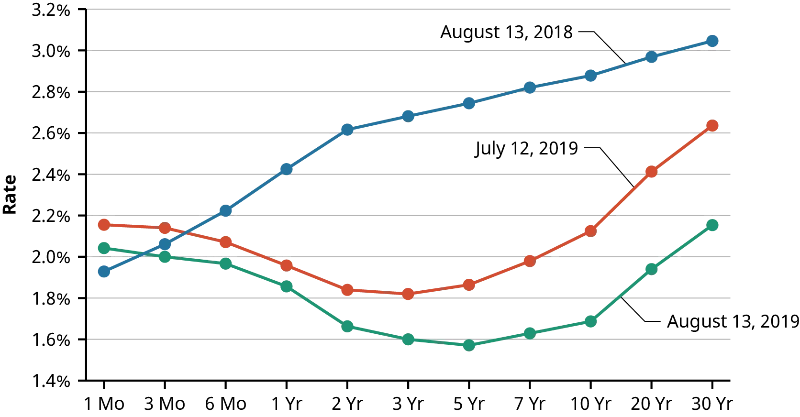
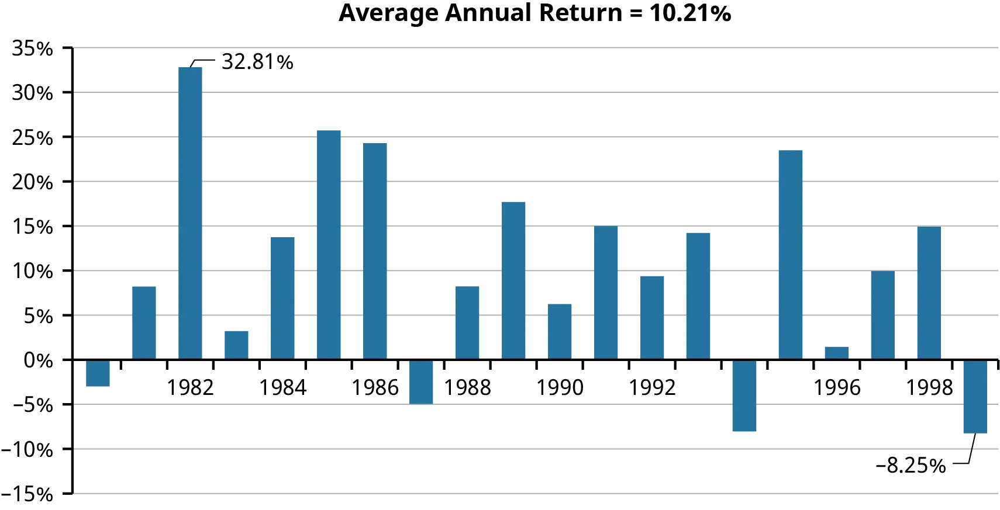
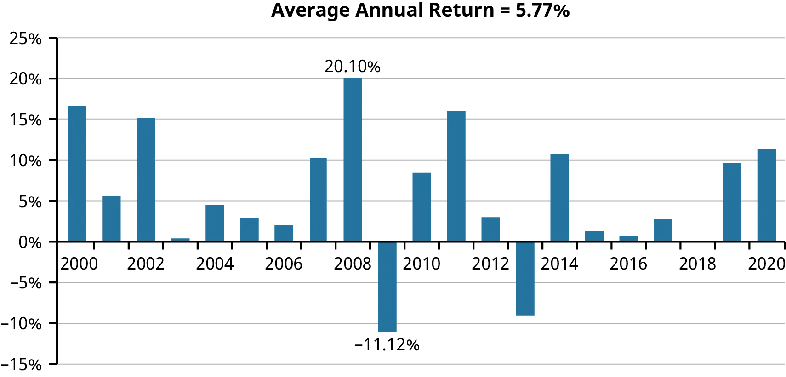
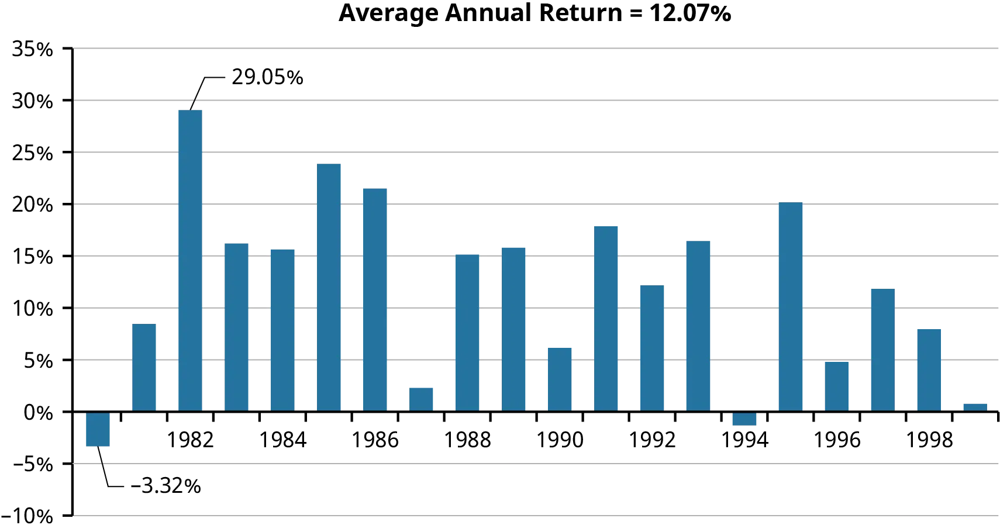
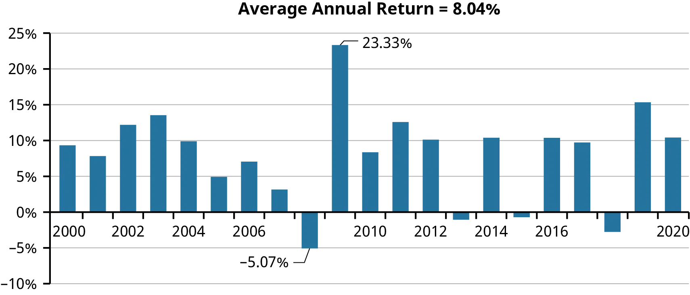
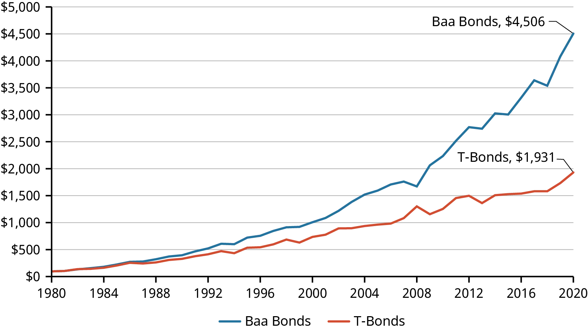

9 Dluhopisy a jejich oceňování
Studijní materiály
- Dahlquist, J. R., &; Knight, R. (2022). Principles of finance. OpenStax, Rice University. https://openstax.org/details/books/principles-finance
- Chapter 10 - Bonds and Bond Valuation
- Chapter 12 - Historical Performance of US Markets
Výstupy z učení:
- Porozumět základním charakteristikám dluhopisů a různým typům dluhopisů.
- Rozpoznat, jaký je vztah mezi cenou dluhopisu a jeho výnosem.
- Naučit se vypočítat hodnotu dluhopisu a rozlišovat mezi dluhopisy s diskontem a kupónovými dluhopisy.
- Porozumět konceptům dluhopisů s pevnou a variabilní úrokovou sazbou.
- Naučit se, jak funguje výnosová křivka a jaký je její význam.
- Identifikovat běžná rizika dluhopisů.
9.1 Charakteristika dluhopisů
Definice
Dluhopis je kontrakt představující půjčku poskytnutou věřitelem (investorem) dlužníkovi (emitentovi dluhopisu), kde se dlužník zavazuje splatit jistinu spolu s úroky (tzv. kupónem) ve stanoveném čase.
- Dluhopisy emitují převážně firmy (korporátní dluhopisy, corporate bonds) a státy (státní dluhopisy, government bonds).
- Korporátní dluhopisy s vysokým výnosem, ale také velkým rizikem se nazývají “junk bonds” nebo “high yield bonds”.
- Jedná se o externí zdroj financování.
- Držitel dluhopisu má přednostní právo na majetek společnosti a její cash flow (oproti vlastníkům / akcionářům), ale nemá hlasovací právo.
- Kupónový dluhopis \(\rightarrow\) pravidelné splátky úroků.
- Diskontovaný dluhopis (zero-coupon bond) \(\rightarrow\) žádné splátky úroků, ale investor ho kupuje se slevou.
- Další typy dluhopisů: convertible bond, callable bond, putable bond, inflation protected bond, Eurodollar bond, atd.
9.1.1 Základní pojmy
- Jmenovitá hodnota (jistina, par value, face value) \(\rightarrow\) půjčená částka, kterou je věřitel povinen splatit při splatnosti dluhopisu.
- Úroková (kupónová) sazba \(\rightarrow\) úroková sazba použitá k výpočtu pravidelných kupónových plateb dluhopisu, vyjádřena jako roční sazba.
- Kupónová platba \(\rightarrow\) pravidelná platba, kterou dostává věřitel od dlužníka.
- Datum splatnosti \(\rightarrow\) datum expirace dluhopisu, kdy emitent zaplatí poslední úrokovou platbu a splatí jemnovitou hodnotu.
- Výnos do splatnosti (YTM) \(\rightarrow\) diskontní sazba použitá k výpočtu současné hodnoty budoucích peněžních toků dluhopisu, reprezentující návratnost, pokud je dluhopis držen do splatnosti.
- Možnost předčasného splacení (callable feature) \(\rightarrow\) dluhopis může být ukončen nebo splacen před normálním datem splatnosti.
- Rating hodnocení pravděpodobnosti, že dlužník nesplatí daný dluhopis.
9.2 Oceňování Dluhopisů
Obecný postup
- Určení peněžních toků.
- Diskontování peněžních toků (výpočet současné hodnoty).
- Součet jednotlivých diskontovaných peněžních toků.
\[ \text{PV} = \frac{CF_1}{(1+r)^1} + \frac{CF_2}{(1+r)^2} + \frac{CF_3}{(1+r)^3} + \dots + \frac{CF_n}{(1+r)^n} \]
\[ \text{PV} = \sum^n_{t=1} \frac{CF_t}{(1+r)^t} \]
- \(PV \dots\) cena dluhopisu, současná hodnota všech cash flow
- \(r \dots\) diskontní sazba (nominální), neboli výnos požadovaný investorem (YTM)
- \(CF \dots\) očekávané budoucí cash flow
- Očekávaná cash flow jsou výplaty kupónů a s posledním kupónem i vrácení jistiny.
Příklad
Dluhopis s jistinou 100 Kč a splatností 3 roky vyplácí na konci každého roku úrok 5%. Investor požaduje minimální výnos také 5% (diskontní sazba). Kolik bude ochoten za dluhopis zaplatit? \[ \text{PV} = \frac{5}{(1+0.05)^1} + \frac{5}{(1+0.05)^2} + \frac{105}{(1+0.05)^3} = 100 \]
Na trhu se zvýšily úrokové sazby a investor požaduje výnos 7%. Kolik bude ochoten za dluhopis zaplatit? \[ \text{PV} = \frac{5}{(1+0.07)^1} + \frac{5}{(1+0.07)^2} + \frac{105}{(1+0.07)^3} = 94,75 \]
Centrální banka snížila úrokové sazby. Na trhu je méně atraktivních příležitostí. Investor je ochoten spokojit se s výnosem 3%. Kolik bude ochoten za dluhopis zaplatit? \[ \text{PV} = \frac{5}{(1+0.03)^1} + \frac{5}{(1+0.03)^2} + \frac{105}{(1+0.03)^3} = 105,66 \]
- Příklad ukazuje vliv úrokové sazby na cenu dluhopisu, který je zobrazen na následujícím grafu.
- Jedná se o inverzní vztah, tzn. pokud investoři začnou požadovat vyšší diskontní sazby, cena dluhopisu se sníží.
- Na začátku je většinou nabízený kupón stejný jako požadovaná diskontní sazba (par value bond), v průběhu splatnosti mohou diskontní sazby růst (discount bond) nebo klesat (premium bond).
9.2.1 Využití anuity
S využitím vzorce pro výpočet anuity lze postup zjednodušit:
\[ PV = C \times \frac{1 - (1 + r)^{-n}}{r} + FV \times (1 + r)^{-n} \]
- \(PV \dots\) současná cena dluhopisu
- \(C \dots\) roční kupónová platba
- \(r \dots\) požadovaná úřoková sazba (YTM, yield to maturity), diskontní sazba
- \(n \dots\) počet období do splatnosti
- \(FV \dots\) nominální hodnota dluhopisu
Příklad
Předpokládejme dluhopis s následujícími parametry:
- \(C = \$100\), \(r = 5\%\), \(n = 10\) let, \(FV = \$1000\)
\[ PV = 100 \times \frac{1 - (1 + 0.05)^{-10}}{0.05} + 1000 \times (1 + 0.05)^{-10} \]
- Současná hodnota kupónových plateb: \[ 100 \times \frac{1 - (1 + 0.05)^{-10}}{0.05} = \$772.17 \]
- Současná hodnota jistiny: \[ 1000 \times (1 + 0.05)^{-10} = \$613.91 \]
- Celková hodnota dluhopisu: \[ PV = \$772.17 + \$613.91 = \$1386.08 \]
9.2.2 Různá frekvence kupónových plateb
Příklad
Předpokládejme následující dluhopis:
- Měsíční kupónová platba \(C = \$10\) (Celkem \(\$120\) za rok)
- Diskontní sazba \(r = 6\%\), musí být převedena na měsíční frekvency, \(r_{monthly} = 0.06/12 = 0.005\)
- Počet období do splatnosti \(n = 5\) let, ale protože jsou platby měsíční bude počet úrokových bodobí \(n_{monthly} = 5 \times 12 = 60\)
\[ PV = 10 \times \frac{1 - (1 + 0.005)^{-60}}{0.005} + 1000 \times (1 + 0.005)^{-60} \] \[ PV = \$517.26 + \$741.37 = \$1258.63 \]
9.3 Výnosová křivka (yield curve)
Definice
Výnosová křivka je grafickým znázorněním vztahu mezi výnosem a dobou splatnosti, kdy na ose y je úroková sazba a na ose x doba splatnosti dluhopisu.
- Tvar výnosové křivky je definován její úrovní a sklonem.
- Normální výnosová křivka je rostoucí, tzn. s rostoucí dobou splatnosti roste očekávaný výnos z dluhopisu.
- Plochá výnosová křivka indikuje podobné výnosy pro krátkodobé a dlouhodobé investice, typicky během přechodných fází v ekonomice nebo kvůli určitým monetárním politikám.
- Klesající (invertovaná) výnosová křivka je považována za signál blížící se recese.
- Výnosová křivka je důležitým ekonomickým ukazatelem.
- Příklad invertovaných výnosových křivek způsobených pandemií COVID-19.

9.4 Rizika spojená s dluhopisy
Za vyšší riziko investoři požadují vyšší úrokovou sazbu. Mezi základní typy rizik patří např.:
- Riziko nesplacení (kreditní riziko) \(\rightarrow\) neschopnost dlužníka splácet.
- Riziko úrokových sazeb \(\rightarrow\) změna úrokových sazeb ovlivňuje hodnotu dluhopisu.
- Riziko likvidity \(\rightarrow\) obtížnost prodeje dluhopisu.
- Riziko předčasného splacení \(\rightarrow\) nutnost reinvestovat za méně výhodných podmínek.
- Riziko změny směnných kurzů \(\rightarrow\) pokud je dluhopis v cizí měně.
- Politické riziko \(\rightarrow\) politická stabilita daného státu.
9.4.1 Rating dluhopisů
Definice
Rating dluhopisů představuje hodnocení jejich kvality ratingovou agenturou. Převážně se hodnotí kreditní riziko.
- Hodnocení dluhopisů zahrnuje očekávanou budoucí schopnost firmy splácet dluh a její vyhlídky na růst.
- Firma platí ratingové agentuře za zpracování ratingu.
- Tři největší poskytovatelé hodnocení dluhopisů jsou Fitch Ratings, Moody’s Investors Service a Standard & Poor’s (S&P) Global Ratings.
| S&P / Fitch | Moody’s | Grade | Meaning |
|---|---|---|---|
| AAA | Aaa | Investment | Risk almost zero |
| AA | Aa | Investment | Low risk |
| A | A | Investment | Risky if economy declines |
| BBB | Baa | Investment | Some risk; more if economy declines |
| BB | Ba | Speculative | Risky |
| B | B | Speculative | Risky; expected to get worse |
| CCC | Caa | Speculative | Probably bankruptcy |
| CC | Ca | Speculative | Probably bankruptcy |
| C | C | Speculative | In bankruptcy or default |
| D | Speculative | In bankruptcy or default |
9.5 Historický vývoj dluhopisů
- Zisk z dluhopisů je tvořen úrokem a kapitálovým výnosem.
- Kapitálový výnos představuje změnu ceny samotného dluhopisu a vzniká pokud je dluhopis prodán před dobou splatnosti.
9.5.1 Státní dluhopisy USA
- Americké státní dluhopisy (T-bonds) jsou považovány za jednu z nejbezpečnějších investic a často se používají jako benchmark pro bezrizikovou investici ve finančním modelování.
- Přestože mají nízké riziko nesplacení, hodnoty T-bondů kolísají se změnami úrokových sazeb.
- Od roku 1980 do roku 1999 byl průměrný roční výnos na T-bondech 10,21 %, ovlivněný nadprůměrnou roční inflací 4,28 % a poklesem úrokových sazeb z předchozího období.
- Mezi roky 2000 a 2020, kdy se inflace zpomalila a úrokové sazby byly obecně nižší, byly výnosy T-bondů také průměrně pouze 5,77 %.


9.5.2 Korporátní dluhopisy USA
- Korporátní dluhopisy, konkrétně dluhopisy Baa, vykazovaly výkonnostní vzorce podobné T-bondům v období čtyř dekád od roku 1980 do roku 2020.
- Dluhopisy Baa, které mají vyšší kreditní riziko, vykázaly průměrný roční výnos 12,07 % od roku 1980 do roku 1999 a prémii 2,30 % oproti T-bondům od roku 2000 do roku 2020.


- Prémie získané z dluhopisů Baa významně zlepšují investiční výkonnost v průběhu času. Například investice 100 dolarů do portfolia dluhopisů Baa v roce 1980 by byla v roce 2020 v hodnotě 4 506 dolarů, což předčilo koncovou hodnotu 1 931 dolarů pro podobné portfolio T-bondů.

9.6 Příklady k procvičení
- Kupónový dluhopis s jistinou 100 Kč vyplácí na konci každého roku kupón ve výši 12,73% a jeho splatnost je za 2 roky. Jaká je hodnota dluhopisu, pokud uvažujeme diskontní sazbu 8,79% p.a.?
Výsledek
106,95 Kč
- Kupónový dluhopis s jistinou 50 000 Kč vyplácí na konci každého roku kupón ve výši 6,5% a jeho splatnost je za 3 roky. Jaká je hodnota dluhopisu, pokud uvažujeme diskontní sazbu 9% p.a.?
Výsledek
46 835,88 Kč
- Kupónový dluhopis s jistinou 120 000 Kč vyplácí na konci každého roku kupón ve výši 5.2% a jeho splatnost je za 12 let. Jaká je hodnota dluhopisu, pokud uvažujeme diskontní sazbu 4,6% p.a.?
Výsledek
106 634,76 Kč
- Diskontovaný dluhopis s jistinou 100 Kč nevyplácí žádné kupóny a jeho splatnost je za 13 let. Jaká je hodnota dluhopisu, pokud uvažujeme diskontní sazbu 3,60% ročně?
Výsledek
63,14 Kč
- Diskontovaný dluhopis s jistinou 75 000 Kč nevyplácí žádné kupóny a jeho splatnost je za 5 let. Jaká je hodnota dluhopisu, pokud uvažujeme diskontní sazbu 5,7% ročně?
Výsledek
56 844,22 Kč
- Diskontovaný dluhopis s jistinou 35 000 Kč nevyplácí žádné kupóny a jeho splatnost je za 8 let. Jaká je hodnota dluhopisu, pokud uvažujeme diskontní sazbu 6,9% ročně?
Výsledek
20 523,26 Kč
- Kupónový dluhopis s jistinou 25 000 Kč vyplácí čtvrtletní kupón ve výši 7,22% p.a. a jeho splatnost je za 4 roky. Jaká je hodnota dluhopisu, pokud uvažujeme diskontní sazbu 8,5% p.a.?
Výsledek
23 924,46 Kč
- Kupónový dluhopis s jistinou 100 000 Kč vyplácí měsíční kupón ve výši 5,8% p.a. a jeho splatnost je za 9 roky. Jaká je hodnota dluhopisu, pokud uvažujeme diskontní sazbu 4,3% p.a.?
Výsledek
111 178,1 Kč